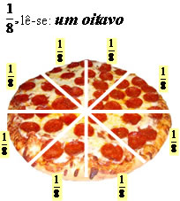
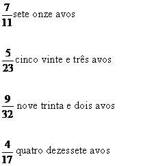

Lembre-se do
numerador e do
denominador


Toda fração na forma de expressão matemática é representada de acordo com uma regra geral, seus termos recebem nomes: numerador e denominador. O numerador tem o objetivo de representar determinada parte do inteiro. O denominador representa a quantidade de partes que o inteiro foi dividido. O numerador e o denominador são separados por uma barra, que também tem a finalidade de expressar a operação da divisão.
Podemos representar as partes da pizza dividida da seguinte maneira

Sabendo que uma fração deve ser representada por um numerador e um denominador, fica fácil compreendermos a sua nomenclatura. A leitura de uma fração irá depender do seu denominador.
A nomenclatura de uma fração pode ser dividida em dois grupos:
- o primeiro compreende os denominadores iguais a 2, 3, 4, 5, 6, 7, 8, 9, 10, 100, 1000.
- o segundo compreende os denominadores que não pertencem ao primeiro grupo, como 12, 20, 51.
Para denominadores iguais a 2, 3, 4, 5, 6, 7, 8, 9, 10, 100, 1000, a leitura das frações fica da seguinte forma:
Segundo grupo: considerando que o denominador seja qualquer outro número, acrescentamos na sua leitura a palavra “avos”.
